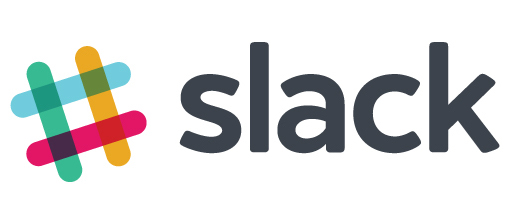

 Slack is an easy-to-use global messaging app for a group of people to communicate across different topics. Think a more organised way of using whatsapp or wechat.
You can have public and private channels
And direct message anyone in the group for one-on-one conversations
You can join new channels, as well as leave channels, so you're only involved in conversations you want to be in.
We recommend you use Google Chrome browser if available.
You can send the above link to your colleagues and have them join too!
We strongly recommend downloading Slack for your computer and/or mobile phone. The app automatically logs you in (so you don't need to enter login details every time), and the experience is the same as using whatsapp/wechat/facebook messenger once downloaded on your phone.
Go to next step for download instructions.
Congratulations - you are now officially a part of the workshop community!
You can choose any photo you like, it sure beats the default profile picture!
Learn to set up your profile for further details.
As a new member, you automatically join our default channels. Any member within the community is allowed to post in any of the public channels, which includes #digital_supply_chain, #product_innovation and #robotics_ai
We get it...as a new member it may be scary to introduce yourself. But a great way to start is to post some articles about topics that interest you.
Or just post an update in #general on what you're working on, what you would like help with, or what you would like to learn.
Need more help getting started with slack or have any other questions?
Contact carmentaubman@fungacademy.com